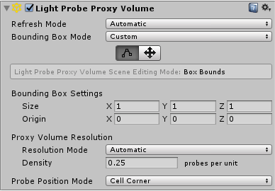
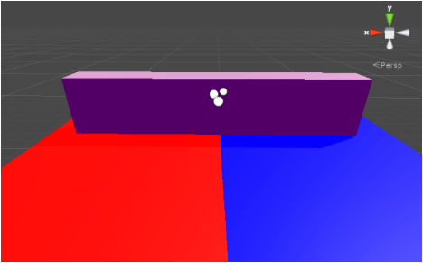

Light Probe Proxy Volume component

The Light Probe Proxy Volume (LPPV) component allows you to use more lighting information for large dynamic GameObjects that cannot use baked lightmaps (for example, large Particle Systems or skinned Meshes).
By default, a probe-lit Renderer receives lighting from a single Light Probe that is interpolated between the surrounding Light Probes in the Scene. Because of this, GameObjects have constant ambient lighting across the surface. This lighting has a rotational gradient because it is using spherical harmonics, but it lacks a spatial gradient. This is more noticeable on larger GameObjects or Particle Systems. The lighting across the GameObject matches the lighting at the anchor point, and if the GameObject straddles a lighting gradient, parts of the GameObject may look incorrect.
The Light Probe Proxy Volume component generates a 3D grid of interpolated Light Probes inside a Bounding Volume. You can specify the resolution of this grid in the UI of the component. The spherical harmonics (SH) coefficients of the interpolated Light Probes are uploaded into 3D textures. The 3D textures containing SH coefficients are then sampled at render time to compute the contribution to the diffuse ambient lighting. This adds a spatial gradient to probe-lit GameObjects.
The Standard Shader supports this feature. To add this to a custom shader, use the ShadeSHPerPixel function. To learn how to implement this function, see the Particle System sample Shader code example at the bottom of this page.
When to use the component
Most of the Renderer components in Unity contain Light Probes. There are three options for Light Probes:
Off: the Renderer doesn’t use any interpolated Light Probes.
Blend Probes (default value): the Renderer uses one interpolated Light Probe.
Use Proxy Volume: the Renderer uses a 3D grid of interpolated Light Probes.
When you set the Light Probes property to Use Proxy Volume, the GameObject must have a Light Probe Proxy Volume (LPPV) component attached. You can add a LPPV component on the same GameObject, or you can use (borrow) a LPPV component from another GameObject using the Proxy Volume Override property. If Unity cannot find a LPPV component in the current GameObject or in the Proxy Volume Override GameObject, a warning message is displayed at the bottom of the Renderer.

Example

In the Scene above, there are two planes on the floor using Materials that emit a lot of light. Note that:
The ambient light changes across the geometry when using a LPPV component. Use one interpolated Light Probe to create a constant color on each side of the geometry.
The geometry doesn’t use static lightmaps, and the spheres represent interpolated Light Probes. They are part of the Gizmo Renderer.
How to use the component
The area in which the 3D grid of interpolated Light Probes are generated is affected by the Bounding Box Mode property.

There are three options available:
| Bounding Box Mode: | Function: |
|---|---|
| Automatic Local (default value) | A local-space bounding box is computed. The interpolated Light Probe positions are generated inside this bounding box. If a Renderer component isn’t attached to the GameObject, then a default bounding box is generated. The bounding box computation encloses the current Renderer, and sets all the Renderers down the hierarchy that have the Light Probes property to Use Proxy Volume. |
| Automatic World | A bounding box is computed which encloses the current Renderer and all the Renderers down the hierarchy that have the Light Probes property set to Use Proxy Volume. The bounding box is world-aligned. |
| Custom | A custom bounding box is used. The bounding box is specified in the local-space of the GameObject. The bounding box editing tools are available. You can edit the bounding volume manually by modifying the Size and Origin values in the UI. |

The main difference between Automatic Local and Automatic World is that in Automatic Local, the bounding box is more resource-intensive to compute when a large hierarchy of GameObjects uses the same LPPV component from a parent GameObject. However, the resulting bounding box may be smaller in size, meaning the lighting data is more compact.
The number of interpolated Light Probes from within the bounding volume is affected by the Proxy Volume Resolution property. There are two options:
Automatic (default value) - The resolution on each axis is computed using the number of interpolated Light Probes per unit area that you specify, and the size of the bounding box.
Custom - Allows you to specify a different resolution on each axis (see below).

Note: The final resolution on each axis must be a power of two, and the maximum value of the resolution is 32.
Probe Position Mode specifies the relative position of an interpolated Light Probe to a cell center. This option may be useful in situations when some of the interpolated Light Probes pass through walls or other geometries and cause light leaking. The example below shows the difference between Cell Corner and Cell Center in a 2D view, using a 4x4 grid resolution:

Images for comparison
A simple Mesh Renderer using a Standard Shader:


A skinned Mesh Renderer using a Standard Shader:


Particle System sample Shader using the ShadeSHPerPixel function
Shader "Particles/AdditiveLPPV" {
Properties {
_MainTex ("Particle Texture", 2D) = "white" {}
_TintColor ("Tint Color", Color) = (0.5,0.5,0.5,0.5)
}
Category {
Tags { "Queue"="Transparent" "IgnoreProjector"="True" "RenderType"="Transparent" }
Blend SrcAlpha One
ColorMask RGB
Cull Off Lighting Off ZWrite Off
SubShader {
Pass {
CGPROGRAM
#pragma vertex vert
#pragma fragment frag
#pragma multi_compile_particles
#pragma multi_compile_fog
// Specify the target
#pragma target 3.0
#include "UnityCG.cginc"
// You must include this header to have access to ShadeSHPerPixel
#include "UnityStandardUtils.cginc"
fixed4 _TintColor;
sampler2D _MainTex;
struct appdata_t {
float4 vertex : POSITION;
float3 normal : NORMAL;
fixed4 color : COLOR;
float2 texcoord : TEXCOORD0;
};
struct v2f {
float4 vertex : SV_POSITION;
fixed4 color : COLOR;
float2 texcoord : TEXCOORD0;
UNITY_FOG_COORDS(1)
float3 worldPos : TEXCOORD2;
float3 worldNormal : TEXCOORD3;
};
float4 _MainTex_ST;
v2f vert (appdata_t v)
{
v2f o;
o.vertex = UnityObjectToClipPos(v.vertex);
o.worldNormal = UnityObjectToWorldNormal(v.normal);
o.worldPos = mul(unity_ObjectToWorld, v.vertex).xyz;
o.color = v.color;
o.texcoord = TRANSFORM_TEX(v.texcoord,_MainTex);
UNITY_TRANSFER_FOG(o,o.vertex);
return o;
}
fixed4 frag (v2f i) : SV_Target
{
half3 currentAmbient = half3(0, 0, 0);
half3 ambient = ShadeSHPerPixel(i.worldNormal, currentAmbient, i.worldPos);
fixed4 col = _TintColor * i.color * tex2D(_MainTex, i.texcoord);
col.xyz += ambient;
UNITY_APPLY_FOG_COLOR(i.fogCoord, col, fixed4(0,0,0,0)); // fog towards black due to our blend mode
return col;
}
ENDCG
}
}
}
}
Hardware requirements
The component requires at least Shader Model 4 graphics hardware and API support, including support for 3D Textures with 32-bit floating-point format and linear filtering.
To work correctly, the Scene needs to contain Light Probes via Light Probe Group components. If a requirement is not fulfilled, the Renderer or Light Probe Proxy Volume component Inspector displays a warning message.